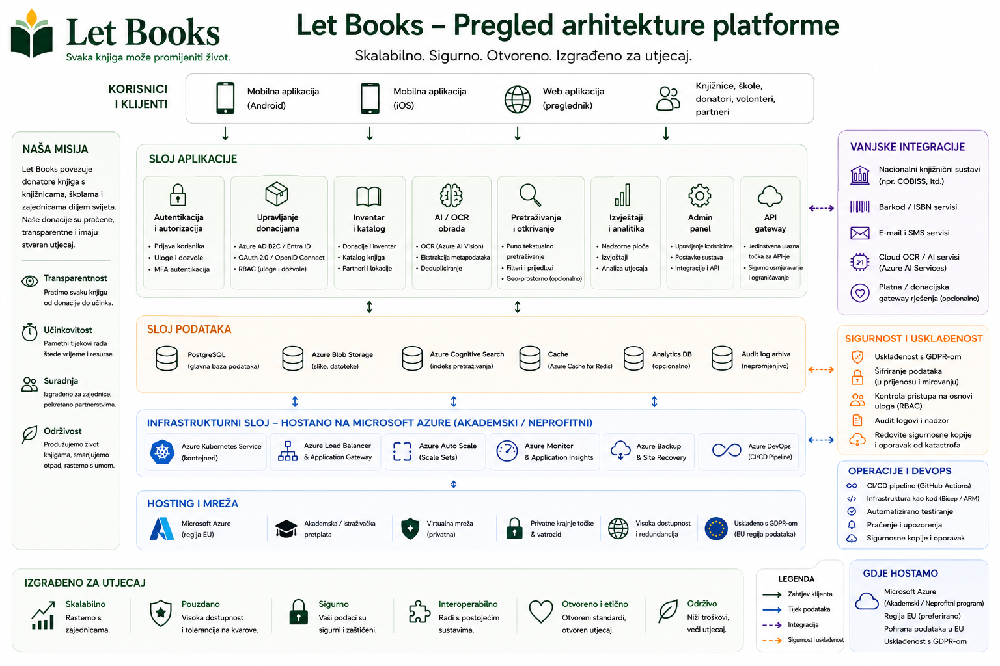

Primjeri hostinga i upravljanja opisuju smjer arhitekture i pravila, ali ne znače certificirane implementacije ili postojeće produkcijske odgovornosti.
Vodič za administratore
Uskladite pristup, privatnost i logistiku od samog početka.
Let Books mora biti koristan privatnom donatoru, udruzi ili budućem institucionalnom domaćinu. Administratori zato trebaju jasna pravila o korisnicima, tenantima, ulogama, lokacijama i neobveznoj uporabi AI-ja.

Što administratori upravljaju
- Odobrenim pristupom i članstvima
- Tenantima i ulogama
- Strukturom lokacija i tokovima donacija
- Granica privatnosti i revizijom
- Neobveznim AI, OCR i prevoditeljskim postavkama
Što treba izbjegavati
- Pristup koji se oslanja samo na vanjsku prijavu
- Javno otkrivanje točnih lokacija pohrane
- Obvezni plaćeni AI u osnovnim tokovima rada
- Miješanje fizičkog primjerka s čistim metapodacima
Model pristupa
Autentifikacija može dolaziti od vanjskih pružatelja identiteta, ali autorizacija mora ostati pod upravljanjem aplikacije.
Odobrene prijave
Rane ili privatne implementacije trebaju ograničiti pristup na unaprijed odobrene korisnike.
Članstva u tenantima
Isti korisnik može sudjelovati u više tenanata s različitim ulogama.
Vidljivost po ulozi
Recenzenti ne smiju automatski vidjeti privatne bilješke i detalje doma donatora.
Privatnost i upravljanje
Točne lokacije, privatne bilješke i kontaktni podaci trebaju ostati ograničeni. Izvoz, uvoz, promjene uloga i budući AI zahtjevi moraju biti evidentirani.
Smjer implementacije
Platforma mora raditi za jednu privatnu implementaciju, ali ostati otvorena za kasnije institucionalno ili samostalno hostanje uz pružateljski neovisnu pohranu.
Primjer: Udruga koristi Let Books za više lokalnih donatora i partnerskih knjižnica. Jedan administrator odobrava pristup, svaki donator ima svoj tenant, a OCR ostaje isključen dok ne postoji proračun za njega.